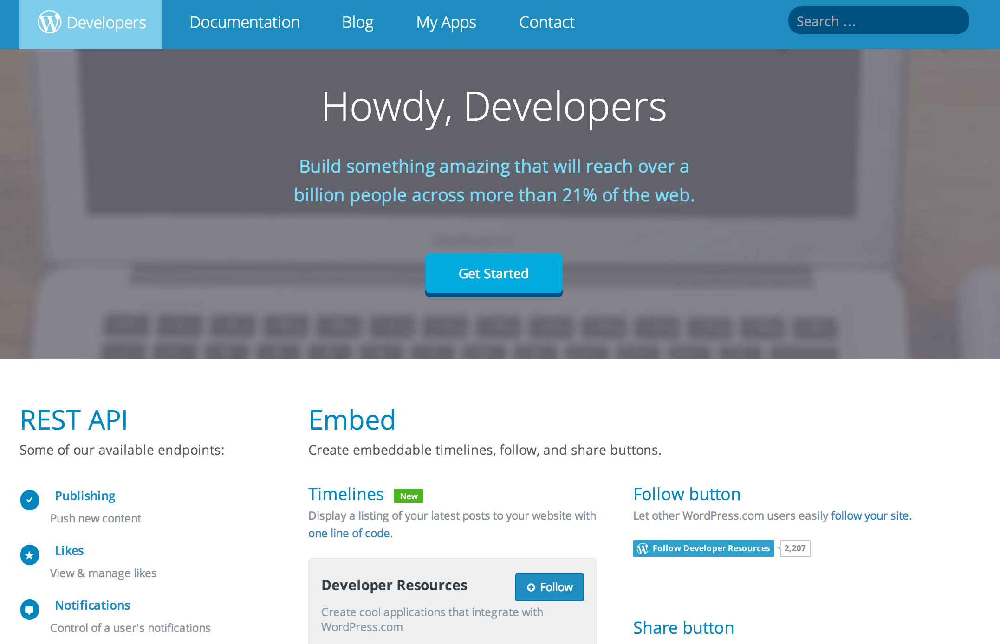
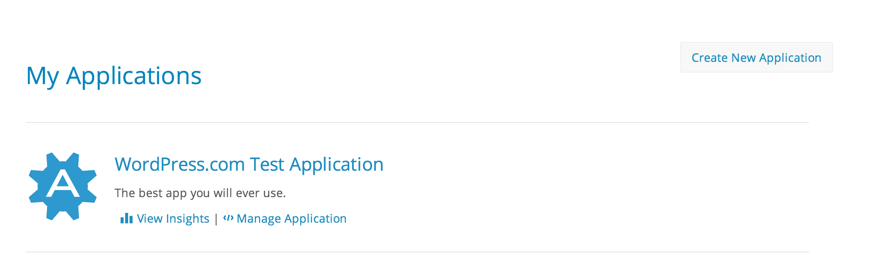
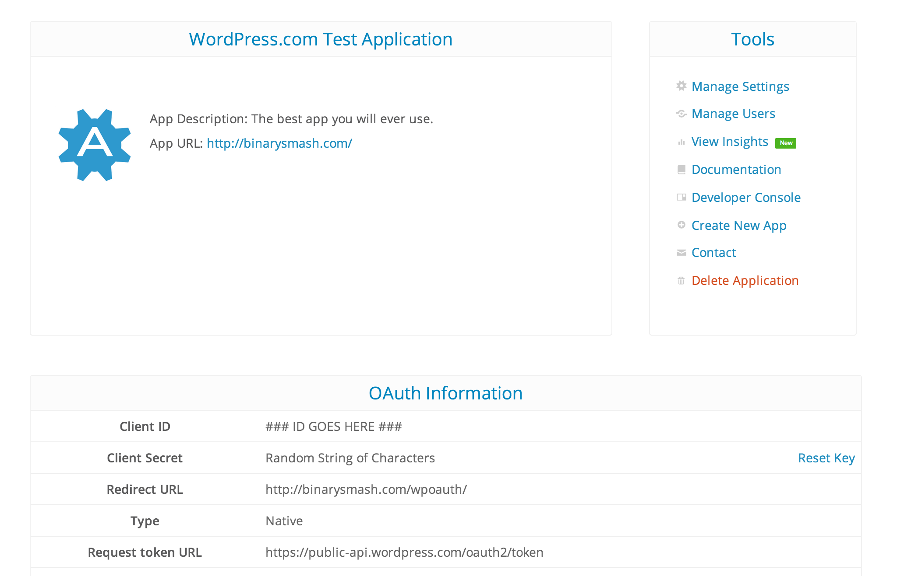

Using the REST API
With WordPress.com and Jetpack
Justin Shreve
Partnerships Engineer
justin@automattic.com
About me: http://justin.gs
Blog: http://binarysmash.com
developer.wordpress.com
What Can it do?

Pocket


Exchange it for full access
""Who AM i?""
https://public-api.wordpress.com/rest/v1/me
making the call
Give me a better example
other things to know
You can make unauthenticated requests

bonus: What's next?
Follow me on Twitter: @justinshreve
developer.wordpress.com

What Can it do?
User Info
Likes
Site Metadata
Create, Edit, Delete, Find, and View Posts
but wait, there's more...
Reblog
Create, Edit, Delete, Find, and View Comments
Taxonomy
Following
Freshly Pressed
and...
Notifications
Stats
WordPress.com Reader (Following, lists, tags)
For all WordPress.com Blogs
But wait! I'm self-hosted :(
Don't Worry
Since 1.9
So Who's using it?
Mobile Apps
Windows 8 APp
We are, Internally
Path
We are, Internally
Klout
More in the pipeline...
OK Already
How?
We register an application with wordpress.com
developer.wordpress.com/apps/

Create an Application
We get our client id, redirect url, and secret key

Save them for later!
$client_id = '1'; $client_secret = '##############';$redirect_url = 'http://example.com';
pick the programming language you feel most comfortable with
We'll use PHP
What did you expect?
Handle Authentication
OAuth2
authorization_code grant type
developer.wordpress.com/docs/oauth2/
oauth2 endpoints
https://public-api.wordpress.com/oauth2/authorize
https://public-api.wordpress.com/oauth2/token
first step: Redirect
https://public-api.wordpress.com/oauth2/authorize?client_id=your_client_id&redirect_uri=your_url&response_type=code
You get a code!
http://example.com/myapp/?code=cw9hk1xG9k
OK. What do I do?
Exchange it for full access
And you get some cool info in return...
Save that token and site ID for later!
$access_token = $secret->access_token;$site_id = $secret->blog_id;
Cool. So far my code just gives me a random string.
Thanks, Justin.
You're welcome.
time to make your first api call
aww
""Who AM i?""
https://public-api.wordpress.com/rest/v1/me
BTW, You're not alone.
http://developer.wordpress.com/docs/api/1/get/me/
http://developer.wordpress.com/contact/
making the call
That's all there is to it
Give me a better example
List all the freshly pressed posts
Let me "Like" Them
https://public-api.wordpress.com/rest/v1/freshly-pressed/
Clicking ""Like"" Kicks off a call to the like endpoint
https://public-api.wordpress.com/rest/v1/sites/$site/posts/$post_ID/likes/new
other things to know
You can make unauthenticated requests
Get public information like site metadata and published posts.
You don't have to do anything special for jetpack
Jetpack blogs show up in the OAuth Dialog.
Jetpack blogs have a site ID. You just pass it in your normal calls.
Developer Console
Custom Post Types and Metadata Support
If you use Jetpack and the REST API, you can easily support CPTs and Custom Meta.
http://wp.me/p2gHKz-OY
rest_api_allowed_post_typesrest_api_allowed_public_metadata
Don't care about blogs? Just want login? Try WordPress.com Connect.
https://developer.wordpress.com/docs/wpcc/
resources
justin@automattic.com
developer@wordpress.com
http://developer.wordpress.com/docs/api/
http://developer.wordpress.com/contact/
http://developer.wordpress.com/blog/
bonus: What's next?
Implicit OAuth + Ability to use API from JS
Multiple Redirect URLs
.... what else do you want to see?
Q&A + DIscussion
AMA
(Especially about our APIs, Partnerships, or Automattic!)